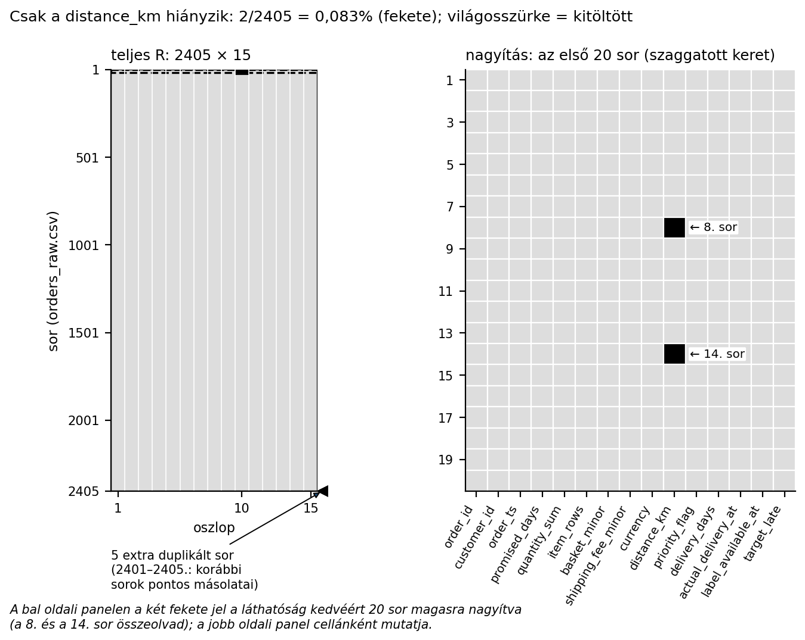

Belépő · szint: közép · idő: 60 perc · eszköz: pandas, matplotlib
Előfeltétel: 13.3. alfejezet · Célkészség: Hiány és anomália mint vizsgálati kérdés · Kimenet: működő kód és a labor ellenőrző tesztje.
A Northstar-labor nyers rendeléstáblája, a
lab/data/orders_raw.csv, szándékosan tartalmaz adatminőségi
hibákat. Az adatszerződés szerint az alapgenerálásnál 2405 sor van: 5
extra duplikált sor, 2 hiányzó distance_km, 1 negatív
basket_minor és 1 olyan sor, amelynek
customer_id értéke nem található a
customers.csv-ben. A megfigyelési egység egy rendelés, a
hivatkozási kulcs az order_id, a pénzösszegek egész
EUR-centben értendők. A feladat nem az, hogy gyorsan „megtisztítsuk” a
táblát, hanem az, hogy a hiányt és anomáliát vizsgálati kérdésként
kezeljük: készítsünk missingness-jelentést, kössük a hibákat a mérési
szerződéshez, és hasonlítsunk össze két alternatív tisztítást anélkül,
hogy automatikusan törölnénk minden gyanús sort.
Előzetes becslés: a hiányzási arány a distance_km
oszlopban
,
azaz
;
a duplikátumok eltávolítása 2400 sort hagy, mert az 5 extra sor
másodpéldány. A 4 hibás sor törléses kezelése 2396 elemű elemzési táblát
eredményez, tehát a tiszta orders.csv 2400 soros
kontrolljához képest 4 rendelésnyi információvesztést.
Legyen az az -edik megfigyelési egység -edik változójának értéke, ahol és . A missingness indicator (hiányzásjelző)
Itt bináris, dimenzió nélküli, az mátrix alakja , tehát ugyanaz, mint a nyers adaté. A -edik oszlop hiányzási aránya
ahol
a hiányzó elemek darabszáma. Ha a hiányt egy csoportra, például
priority_flag szerint szűkítve nézzük, a feltételes
arány
ahol az adott csoport indexhalmaza, a csoport elemszáma. A nevező itt a csoport összes sora, nem a hiányzók száma. A laborban ez a nevező különösen fontos, mert a duplikátumok megsokszorozhatják ugyanazt a rendelést.
A megfigyelt hiányzási minta önmagában nem mondja meg, miért hiányzik az adat. Három szokásos feltételezés:
distance_km-ek például egy technikai kihagyás
véletlen eredményei lehetnének.distance_km hiánya gyakoribb lehet bizonyos
régiókban, de a tényleges távolságtól független.Kis kézi kontroll: hat ügyfél, a region megfigyelt, a
distance_km két sorban hiányzik.
A feltételes arány priority_flag=0 esetén
,
priority_flag=1 esetén ugyancsak
lehet. Ez a megfigyelt táblán MCAR-mintázatnak látszik, de ugyanilyen
mintát adhat egy MNAR-mechanizmus is, ha a 2 elveszett távolság éppen a
legnagyobb távolságú megrendeléseké. A mechanizmus tehát nem a táblából,
hanem a mérési folyamatból igazolható.

distance_km hiányzik, két
sorban (2/2405 = 0,083%); a tábla végén 5 extra duplikált sor
áll.A hiányzási mechanizmus nem olvasható ki a megfigyelt adatokból. A klasszikus felosztás:
| Mechanizmus | Feltétel | Példa |
|---|---|---|
| MCAR | a hiány független minden változótól | véletlen mintavesztés |
| MAR | a hiány a megfigyelt változóktól függ, a hiányzó értéktől nem | a hiányzó jövedelem az iskolázottságtól függ |
| MNAR | a hiány a hiányzó értéktől is függ | a magas jövedelműek nem válaszolnak |
Vegyük a megfigyelt táblát: -nál , -nél hiányzik kétszer. Ugyanez a megfigyelt adat két különböző teljes világból származhat:
| Világ | hiányzó értékei | Teljes átlag | Mechanizmus |
|---|---|---|---|
| MAR | 0, 0 | a hiány -től függ | |
| MNAR | 1, 1 | a hiány -tól függ |
A megfigyelt átlag
(egyetlen megfigyelt érték), a teljes átlag viszont a hiányzó értékektől
függően az
intervallumban bármi lehet, ahogy a lenti bounds() mutatja.
A hiányzási minta és a megfigyelt értékek azonosak; a mechanizmus csak
külső domaininformációból (adatfelvételi folyamat, kérdőívlogika,
utánkövetés) dönthető el, és akkor sem bizonyossággal, hanem
feltevésként. Ezért a hiányzás kezelésekor a feltevést
és a szenzitivitási elemzést együtt kell jelenteni, nem
pedig „MCAR-nak látszik” alapon pontbecslést adni.
def bounds(observed_sum, observed_n, missing_n):
total = observed_n + missing_n
return {"min": observed_sum / total,
"max": (observed_sum + missing_n) / total,
"observed_mean": observed_sum / observed_n}
# Megfigyelt: egy 1-es, két hiányzó
print(bounds(observed_sum=1, observed_n=1, missing_n=2))
# {'min': 0.333..., 'max': 1.0, 'observed_mean': 1.0}A lab/missingness.py bounds(),
scenarios() és report() függvényei ezt a két
világot és az azonos megfigyelt táblát adják; a
tests/test_missingness.py a
korlátot, a két eltérő teljes átlagot és az azonos megfigyelt táblát
ellenőrzi.
A range check (tartományellenőrzés) a szerződésben rögzített, lehetséges értéktartományt vizsgálja. Formálisan az érvényes tartomány , tehát
A laborban ilyen szabály például: distance_km >= 0,
basket_minor >= 0, quantity_sum > 0,
promised_days == 7, delivery_days > 0. A
negatív basket_minor tartománysértés, mert a szerződés
szerint a kosárérték nem lehet negatív. A distance_km
hiánya viszont nem tartománysértés, hanem hiány.
A kiugró (outlier) olyan megfigyelt érték,
amely a többitől szokatlanul távol esik, de a tartománysértéssel
ellentétben lehetséges érték. A boxplot egy gyakori jelölési szabályt
használ: a whisker határok
ahol és az alsó és felső kvartilis, az IQR pedig . Ez az 1,5-ös szabály csak vizuális jelölés; egy nagyobb távolság lehet valós, üzletileg fontos rendelés, nem automatikus törlendő hiba.
A szkript a lab projektgyökeréből futtatandó, és a data/
mappa CSV-it olvassa. A pandas, a NumPy és a Matplotlib a
lab/pyproject.toml alapfüggőségei közül való; a boxplotot
ezért Matplotlibbel rajzoljuk, nem a csak a statistics
extrában elérhető Seabornnal.
# Linux/macOS, munkakönyvtár a labor projektgyökere
uv run python missingness_report.pyWindows PowerShellben a futtatás előtt
Set-Location C:\path\to\northstar-lab, majd ugyanez a
uv run parancs.
"""Missingness-jelentés és két alternatív tisztítás érzékenységi összevetése."""
from pathlib import Path
import numpy as np
import pandas as pd
import matplotlib.pyplot as plt
DATA = Path("data") # a lab/ projektgyökérhez képest
RAW = pd.read_csv(DATA / "orders_raw.csv")
CUSTOMERS = pd.read_csv(DATA / "customers.csv")
REFERENCE = pd.read_csv(DATA / "orders.csv") # kontroll, nem a tisztítás inputja
# 1. Szerződésellenőrzés: a labor alapméretei
print(RAW.shape)
# futtatva: (2405, 15)
duplicated_mask = RAW.duplicated()
missing_distance = RAW["distance_km"].isna()
negative_basket = RAW["basket_minor"] < 0
known_customer = RAW["customer_id"].isin(CUSTOMERS["customer_id"])
print(duplicated_mask.sum()) # futtatva: 5
print(missing_distance.sum()) # futtatva: 2
print(negative_basket.sum()) # futtatva: 1
print((~known_customer).sum()) # futtatva: 1
# 2. Missingness-jelentés
R = RAW.isna().astype(int) # shape: (2405, 15)
missing_report = pd.DataFrame({
"n_missing": R.sum(),
"missing_rate": R.mean(),
})
print(missing_report.loc[missing_report["n_missing"] > 0])
# A distance_km hiányzási aránya: 2/2405, a többi oszlopé 0.
# 3. Tartomány- és hivatkozási ellenőrzés
range_checks = {
"distance_km_negative": RAW["distance_km"] < 0,
"basket_minor_negative": RAW["basket_minor"] < 0,
"quantity_sum_nonpositive": RAW["quantity_sum"] <= 0,
"promised_days_not_7": RAW["promised_days"] != 7,
"delivery_days_nonpositive": RAW["delivery_days"] <= 0,
"customer_unknown": ~known_customer,
}
range_report = pd.DataFrame({
"n_violations": {k: int(mask.sum()) for k, mask in range_checks.items()}
})
print(range_report)
# A labor szerint a negatív basket és az ismeretlen customer jelenik meg.
# 4. Két alternatív tisztítás
base = RAW.loc[~duplicated_mask].copy() # 2400 sor, 5 duplikált másodpéldány nélkül
bad_mask = (
base["distance_km"].isna()
| (base["basket_minor"] < 0)
| ~base["customer_id"].isin(CUSTOMERS["customer_id"])
)
clean_drop = base.loc[~bad_mask].copy() # A: hibás sorok listwise törlése
clean_keep = base.copy() # B: megtartás és hibajelző
clean_keep["distance_na"] = base["distance_km"].isna().astype(int)
clean_keep.loc[base["basket_minor"] < 0, "basket_minor"] = np.nan
clean_keep["unknown_customer"] = ~base["customer_id"].isin(CUSTOMERS["customer_id"])
# A másolás után a basket_minor float64 lehet, mert a NaN miatt.
# A distance_km hiánya és a target_late megfigyelése B-ben megmarad.
sensitivity = pd.DataFrame({
"variant": ["raw_with_duplicates", "drop_bad_rows", "keep_and_flag"],
"n_rows": [len(RAW), len(clean_drop), len(clean_keep)],
"late_rate": [
RAW["target_late"].mean(),
clean_drop["target_late"].mean(),
clean_keep["target_late"].mean(),
],
"distance_mean": [
RAW["distance_km"].mean(),
clean_drop["distance_km"].mean(),
clean_keep["distance_km"].mean(skipna=True),
],
})
print(sensitivity)
# 5. Ábra: a távolság eloszlása a megtartó változatban
fig, ax = plt.subplots()
groups = [g["distance_km"].dropna() for _, g in clean_keep.groupby("priority_flag")]
ax.boxplot(groups, whis=1.5)
ax.set_xticks([1, 2], ["priority_flag=0", "priority_flag=1"])
ax.set_ylabel("distance_km (km)")
ax.set_title("distance_km priority_flag szerint")
fig.tight_layout()
plt.show()A lab adatain futtatva (pandas 2.2.3) a hiányzásjelentés csak a
distance_km oszlopban talál hiányt (2 sor, arány 0,000832 a
2405 sorra), a tartományellenőrzés 1 negatív basket_minor-t
és 1 ismeretlen ügyfelet jelez, az érzékenységi tábla pedig:
variant n_rows late_rate distance_mean
0 raw_with_duplicates 2405 0.205405 917.718685
1 drop_bad_rows 2396 0.204090 917.712437
2 keep_and_flag 2400 0.204583 917.399083A kód R = RAW.isna().astype(int) sora közvetlenül
előállítja a hiányzásjelző mátrixot. A range_report egyes
szabályai a szerződött tartományokat ellenőrzik; a negatív
distance_km szabály a 2 hiányzó sort nem jelöli, mert a
NaN < 0 értéke False. A
clean_keep változat a negatív kosárértéket hiányként
jelöli, de a sor többi értékét megtartja, így a target_late
arány a 2400 soros alapon számítható.
A labor szerződött invariánsai adják a kézi kontrollt: a nyers tábla
2405 sor, a duplikált sorokból 5, a distance_km hiányból 2,
a negatív kosárból 1, az ismeretlen ügyfélből 1 található. A
RAW.drop_duplicates() 2400 sort ad, de ez a 2400 sor még
nem azonos a tiszta orders.csv-vel, mert a 4 hibás sor
javítatlan marad. A drop_bad_rows változat 2396 sort hagy;
ez a 4 hibás sor eltávolításának következménye. A
distance_km hiányzási arányának nevezőjét a duplikátumok
nélkül kell értelmezni: 2 hiány 2400 rendelésből, nem 2405 sorból.
A két alternatíva közötti érdemi különbség a 4 hibás sor. Az A
változat konzervatív, de a hibás sorok eldobásával minden oszlopra nézve
elveszít 4 rendelést. A B változat a hibajelzőket megtartja, ezért a
target_late arányt a teljes 2400 rendelésen becsüli, de a
distance_km-et érintő elemzéseknél a 2 hiány továbbra is
kimarad. A distance_km átlagban a nyers tábla és a megtartó
változat között kicsi a különbség, mert a negative basket és az
ismeretlen ügyfél nem érinti a távolságot. Az A és B közötti late rate
különbségének irányát nem a módszer garantálja, hanem a konkrét sorok
target_late értéke határozza meg. A laborban itt B > A:
a két hiányzó távolságú rendelés (O000001, O000012) mindkettő késő, a
negatív kosarú (O000023) és az ismeretlen ügyfelű (O000017) nem, ezért a
törléses változat 0,2046 helyett 0,2041-et ad. Más adaton az irány
megfordulhat, ezért az összevetést mindig a tényleges futtatásból kell
kiolvasni.
A 2 hiányzó distance_km (a duplikátummentes táblán a
priority_flag=0 csoportban 1/1179, az =1
csoportban 1/1221) statisztikai értelemben túl kevés ahhoz, hogy a
hiányzást priority_flag vagy más változó szerinti
csoportosítással megbízhatóan mechanizmushoz kössük. A
missingness-jelentés ezért itt főként dokumentációs eszköz, nem
mechanizmusteszt.
Az MCAR, MAR és MNAR kategóriák a hiányzási mechanizmus feltevései, nem olyan címkék, amelyek az egyetlen megfigyelt táblából bizonyossággal megállapíthatók. A teljes esetek elemzése ezért érzékenységvizsgálatot igényelhet.
Értelmezés. Tegyük fel, hogy egy nagyobb
megfigyelt táblán a distance_km hiánya a
priority_flag=1 csoportban sokkal gyakoribbnak látszik,
mint a másikban. Miért nem jelenti ez automatikusan azt, hogy a hiány
MAR vagy MNAR? Milyen mérési folyamatból származó, táblán kívüli
ellenőrzést kérnél?
Implementálás. Írj
missingness_report(df) függvényt, amely a bemenő DataFrame
minden oszlopára visszaadja a hiányzó darabszámot és a hiányzási arányt.
Ezután a distance_km-re adj feltételes hiányzási arányt
priority_flag szerint, és add meg pontosan a
nevezőt.
Hibakeresés. Egy kolléga a nyers adatot így
tisztítja: orders_raw.dropna().copy(), majd a hiányzó
distance_km-et nullára cseréli:
df["distance_km"].fillna(0). Miért hibás mindkét lépés? A
labor szerződésére hivatkozva indokold, miért nem tekinthető a 0
távolságnak.
Megváltozott feltétel. Tegyük fel, hogy a
distance_km hiánya éppen akkor valószínűbb, ha a csomag
késni fog, és a hiány a nagy távolságú rendeléseknél gyakoribb. Melyik
alternatív tisztítás torzítaná kevésbé a target_late arány
becslését? A távolságra épülő modellnél ugyanez a választás elegendő-e?
Válaszodat a 4 hibás sor szerepére alapozd.
A megfigyelt táblából csak az
minta látszik, a hiányzó tényleges distance_km értékek nem.
Ugyanazt a feltételes arányt előállíthatja az, hogy a prioritásos
rendelések feldolgozása más rendszerben történt (MAR), de az is, hogy a
kritikus távolságoknál hiányos a mérés (MNAR). A generátor forráskódja a
laborban megmondja a tényleges mechanizmust, egy üzleti rendszerben
viszont a napló, a mérési dokumentáció vagy egy reprodukált bevitel
kell. Az ellenőrző kérdés: „Mikor és melyik rendszer írta ezt a mezőt
üresen?”
A függvény:
def missingness_report(df):
n = len(df)
return pd.DataFrame({
"column": df.columns,
"n_missing": df.isna().sum().to_numpy(),
"missing_rate": (df.isna().sum() / n).to_numpy(),
})
report = missingness_report(RAW)
clean_base = RAW.drop_duplicates().copy()
clean_base["distance_na"] = clean_base["distance_km"].isna().astype(int)
conditional = (
clean_base
.groupby("priority_flag")["distance_na"]
.agg(n_missing="sum", n_group="count", missing_rate="mean")
)A nevező a priority_flag adott csoportjának összes
rendelése, nem a hiányzó értékek száma. A duplikátummentes
clean_base használata azért lényeges, mert a duplikátum
mindkét csoport nevezőjét megváltoztathatná.
A dropna() az egész DataFrame minden oszlopára
törölne minden olyan sort, ahol bármelyik mező hiányzik. A laborban most
csak a distance_km hiányos, ezért 2 sort dobna el; viszont
a művelet a jövőbeli oszlopok hiányára is automatikusan vonatkozna, és
nem dokumentálná, hogy melyik mező miatt vesztettünk sort. A
fillna(0) ettől súlyosabb: új adatot talál ki. A
distance_km = 0 egy konkrét, ténylegesen kis távolságú
rendelést jelent; a szerződésben a nullát nem szabad távolságnak
tekinteni. A hiányt NaN-ként kell megtartani, vagy a
mechanizmusfeltételezés szerint külön kezelni.
A target_late arány becsléséhez a
keep_and_flag jobb, mert a célváltozó a 4 hibás soron is
megfigyelt, és a teljes 2400 rendelésen számol. A
drop_bad_rows 4 rendelést eldob; ha a 4 hiba éppen a késő
kézbesítéssel függ össze, az arány torzulhat. A laborban ez ténylegesen
így van: mindkét hiányzó távolságú rendelés késő
(target_late=1), ezért a törléses változat late_rate-je
0,2046-ról 0,2041-re csökken (2 sor miatt a különbség kicsi, kb.
0,0005). A távolságmodellnél ez kevés: a 2 hiányzó
distance_km a megtartó változatban is hiányként marad,
tehát az elemzés csak 2398 soron használhatja a távolságot. A korrekt
megoldás ilyenkor a hiányzó távolság pótlása a mérési folyamatból, nem a
sor csendes törlése, vagy tudatos MNAR-modell és bizonytalanság
jelentése.
Gyakori tévedés, hogy a megfigyelt hiányzási mintából azonosítani lehet a mechanizmust. Vegyünk két régiót, mindkettőben 3 rendelést:
| region | priority_flag | distance_km |
|---|---|---|
| north | 0 | 12 |
| north | 1 | 15 |
| north | 0 | hiány |
| south | 1 | 20 |
| south | 0 | 24 |
| south | 1 | hiány |
A táblában mindkét régióban a hiányzási arány. Ez MCAR-ral éppúgy konzisztens, mint azzal, hogy az északi hiányzó távolság valójában km, a déli pedig km – mindkettő nagyobb a régió megfigyelt értékeinél –, vagyis a nagy távolságokat nem rögzítette a rendszer (MNAR). A tábla ugyanaz; a mechanizmus mégis különböző. Ezért a hiányzási jelentésnek mindig fel kell tüntetnie a feltételezést, nem csak a százalékot. Az 1.4. alfejezet diagnosztikai felosztása itt is segít: ez adatértelmezési kérdés, nem pusztán programozási hiány. A 9.4. alfejezet numerikus fegyelme pedig arra figyelmeztet, hogy a -val töltés nem ártalmatlan skálázás, hanem a mérési szerződés megsértése.
A hiányzásjelző
bináris mátrix, amelyből arányokat és csoportos feltételes arányokat
számítunk; a mechanizmus azonban MCAR, MAR vagy MNAR feltételezés, nem a
táblából bizonyított tény. A tartományellenőrzés a szerződésben
lehetetlen értékeket jelöli, a kiugró ezzel szemben lehetséges, de
szokatlan érték. A laborban 5 duplikált sor, 2 hiányzó
distance_km, 1 negatív basket_minor és 1
ismeretlen ügyfél szerepel; a törléses és megtartásos tisztítás eltérő
információszerkezetű, ezért érzékenységi összevetése kötelező. A 0-val
töltés új adatot gyárt, a dropna() pedig nem dokumentálja a
törlés okát. A következő 14.1. alfejezet a
bináris jelzőket eseményként és feltételes valószínűséggel
vizsgálja.